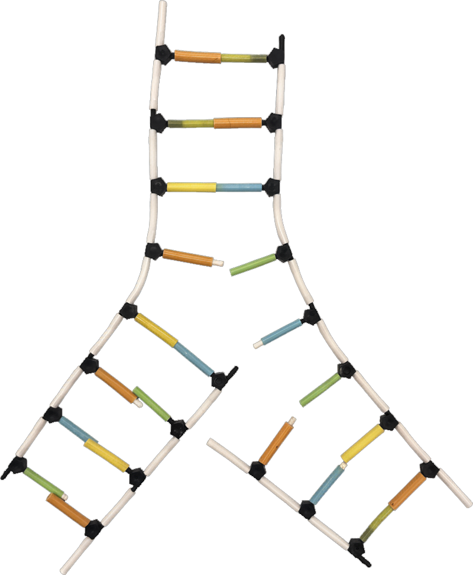

Identify the Parts of Your Replication Fork Model
Yesterday you built this model by hand. Each numbered pin on the diagram corresponds to a structure in the key on the right. Study the diagram, then complete the self-check quiz without looking at the key.

-
1Replication Fork
Y-junction where helicase unwinds the helix, exposing both template strands.
-
2Template Strand — Left
Parental strand read 3′→5′; blueprint for the leading daughter strand.
-
3Template Strand — Right
Parental strand read 3′→5′; blueprint for the lagging daughter strand.
-
4Leading Strand (daughter)
Synthesized continuously 5′→3′ toward the fork. Green arrow shows direction.
-
5Lagging Strand (daughter)
Synthesized discontinuously 5′→3′ away from the fork. Orange arrow shows direction.
-
6PO₄ — Left Backbone, Upper
White tube. Links nucleotides via phosphodiester bonds; gives DNA its negative charge.
-
7PO₄ — Left Backbone, Lower
Same group, closer to the fork. Four PO₄ groups total (pins 6–9).
-
8PO₄ — Right Backbone, Upper
Right-side backbone phosphate, upper position.
-
9PO₄ — Right Backbone, Lower
Right-side backbone phosphate, near the fork.
-
103′–OH — Left Template Top
Free hydroxyl at the 3′ terminus of the left parental strand (top of model).
-
113′–OH — Right Template Near Fork
3′ end of the right parental strand at the fork junction. Four 3′–OH groups total (pins 10–13).
-
123′–OH — Leading Strand Growing End
Active 3′–OH near the fork. DNA polymerase adds new nucleotides here continuously.
-
133′–OH — Lagging Strand Far End
3′ terminus of the lagging strand, distal from the fork (bottom of model).
-
14Deoxyribose Sugar
Black pentagon connector. 5-carbon sugar; lacks 2′–OH, distinguishing DNA from RNA.
-
15Nitrogenous Base Pair
Colored tube bridging both backbones. A–T (2 H-bonds) or G–C (3 H-bonds).
Without looking at the key, select the correct name for each pin. Click Check Answers when done.